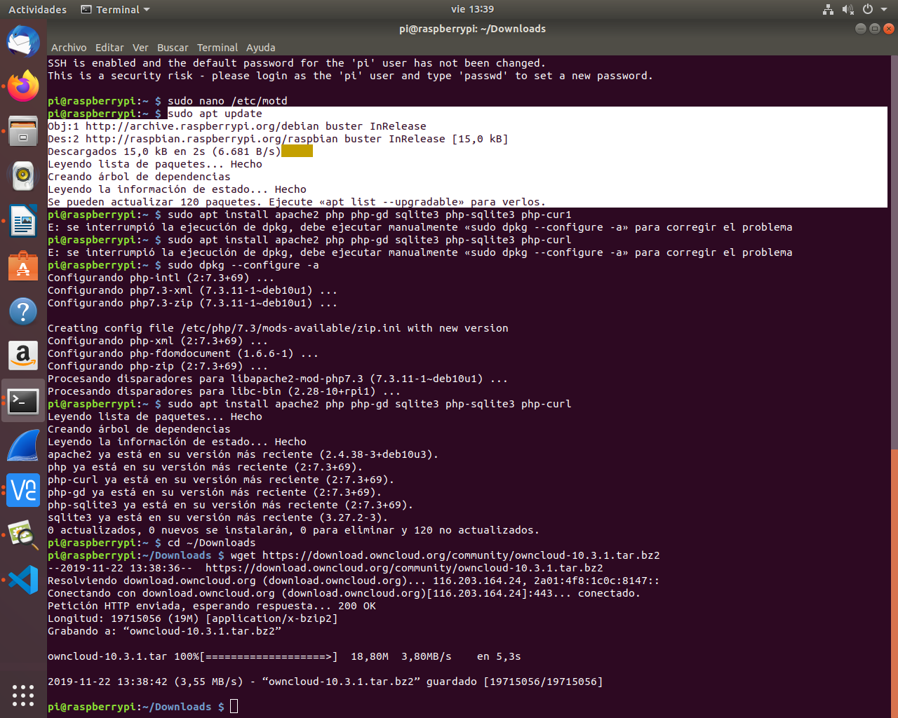
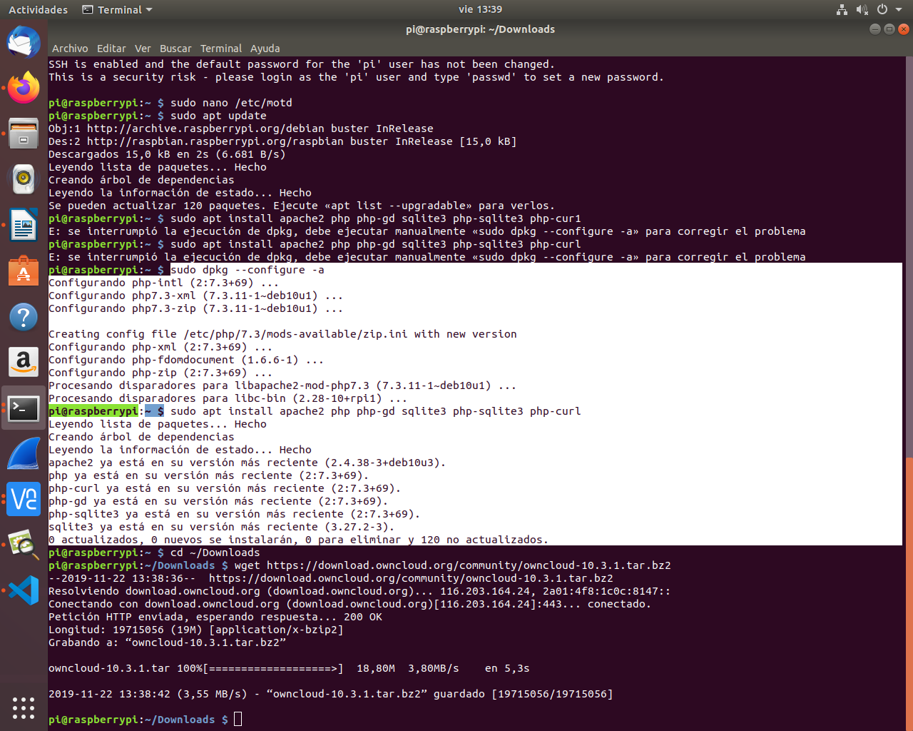
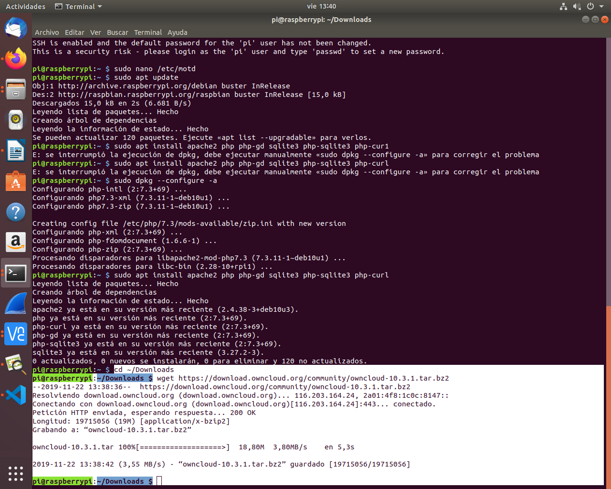
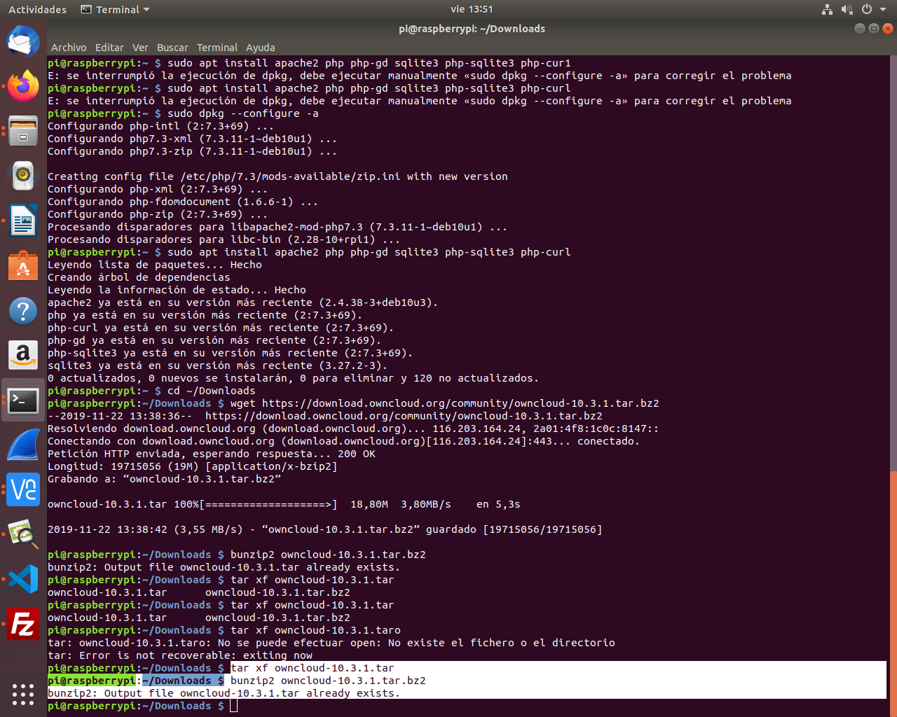
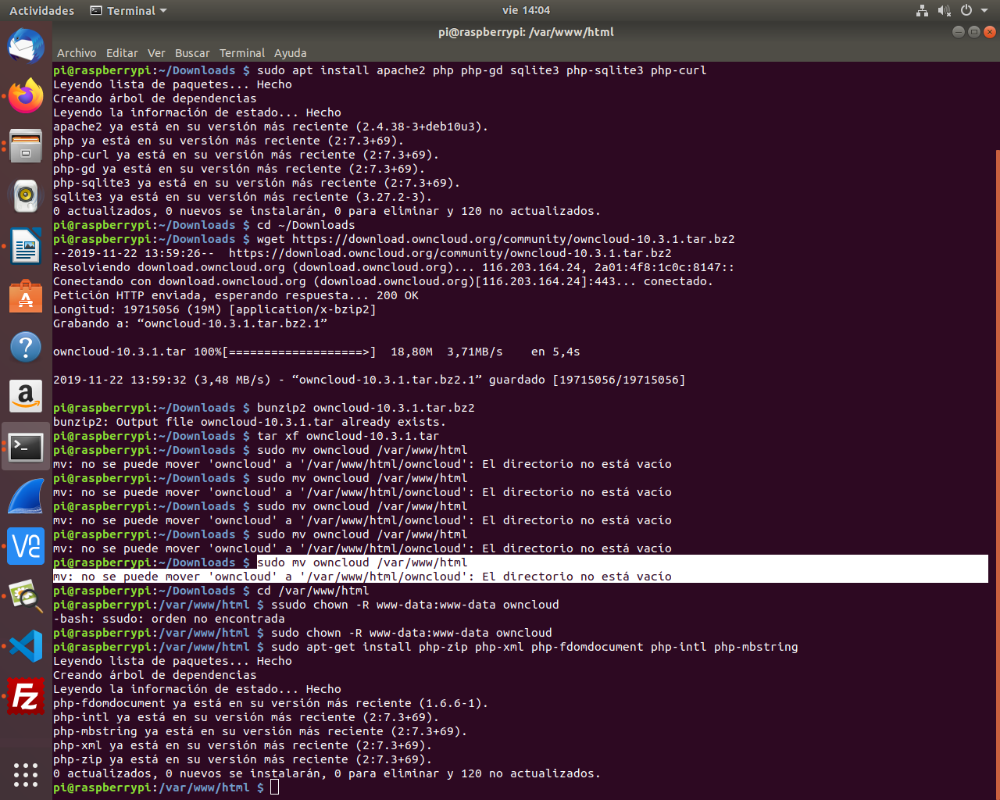
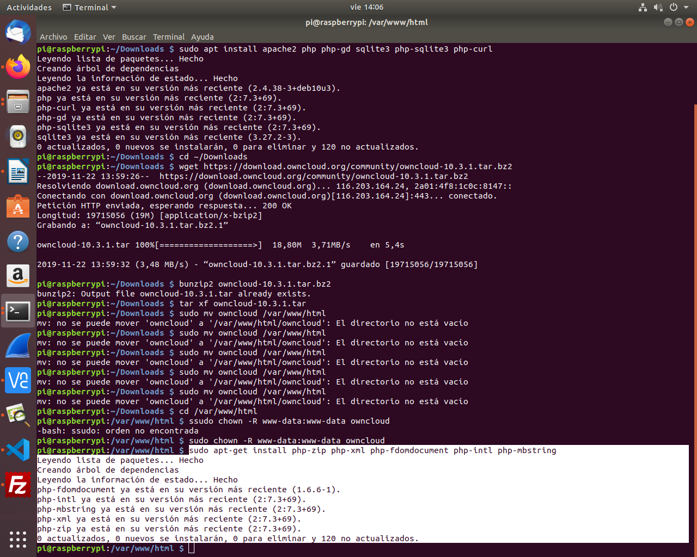

Instalación de OwnCloud en una Raspberry Pi
Paso 1: Instalar el servicio Web Apache y PHP
- $ sudo apt update

- $ sudo apt install apache2 php php-gd sqlite3 php-sqlite3 php-curl

Paso 2:Descargar en la Raspberry el fichero Owncloud y descomprimir con el comando:
- cd ~/Downloads
- wget https://download.owncloud.org/community/owncloud-10.3.1.tar.bz2

- bunzip2 owncloud-10.3.1.tar.bz2

- tar xf owncloud-10.3.1.tar

- sudo mv owncloud /var/www/html

- cd /var/www/html
- sudo chown -R www-data:www-data owncloud

- sudo apt-get install php-zip php-xml php-fdomdocument php-intl php-mbstring
